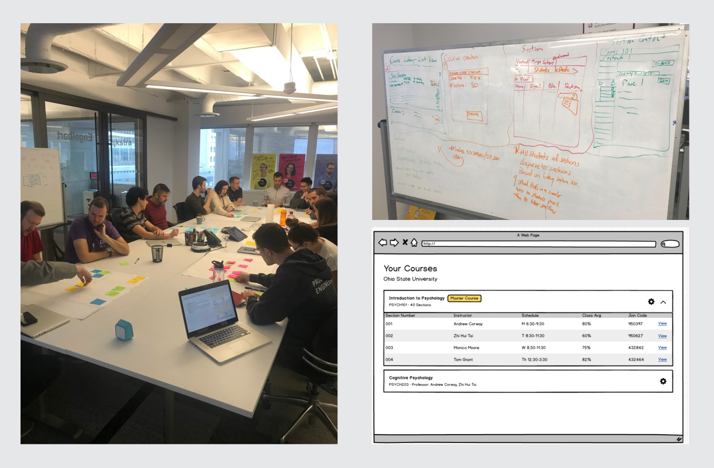
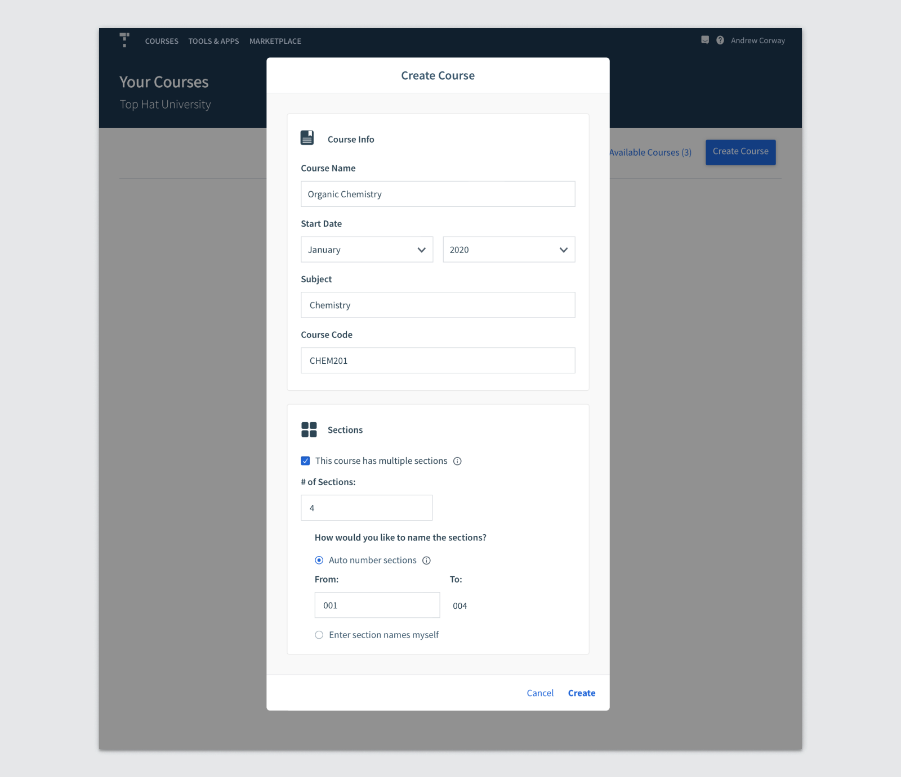
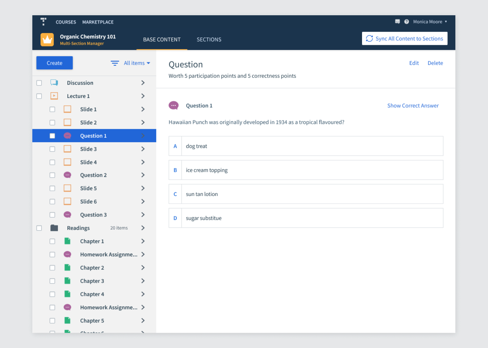
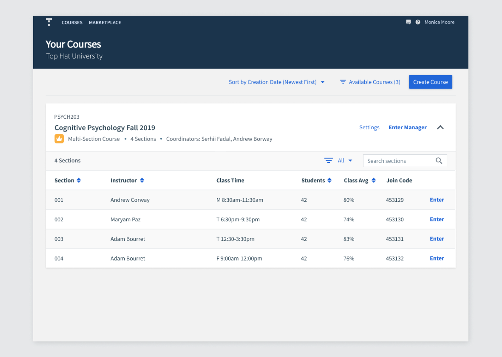
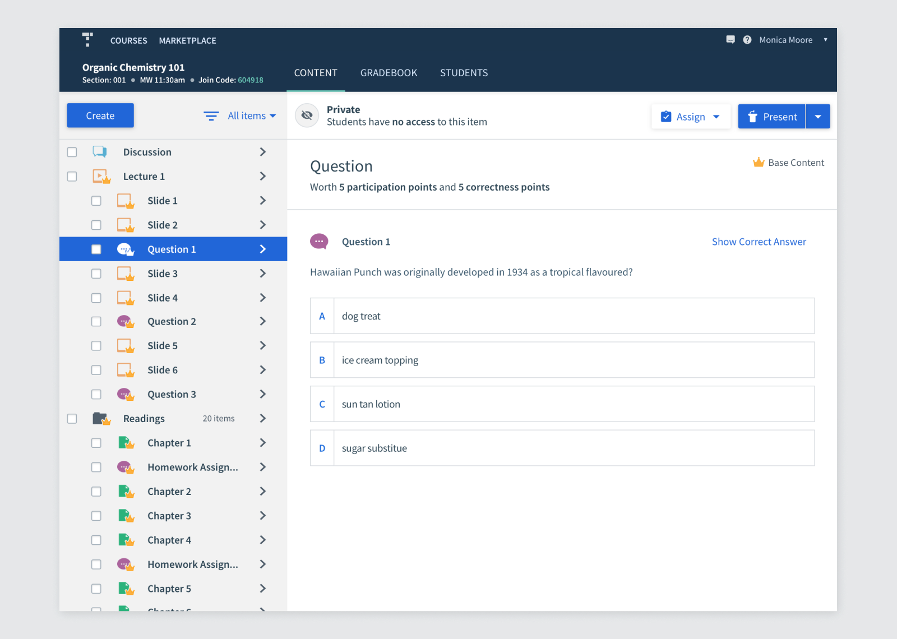

Top Hat
Multi-Section Management
Due to a partnership with a textbook publisher, it became necessary for Top Hat to support the management of multi-section courses. These courses can have dozens of sections with dozens of different instructors, and hundreds of students. Handling these courses in Top Hat is currently a huge pain. If we could do enable these courses to be managed in Top Hat, it would open up $3m in revenue.
Users
Multi-section courses posed a challenge, in that there were so many user types to consider, with 2 completely new ones: Course Coordinators and Lab Coordinators. The PM and I extensively interviewed people from each group to learn about them.
Primary Users
- Course Coordinator: Decides on the content and curriculum of the overall course, and may also teach sections of the course
- Professor: Teaches 1 or multiple sections, and has some flexibility on how to teach their students
- Teaching Assistant (TA): Teaches 1 or multiple sections and usually has to teach the course as instructed by the course/lab coordinator
- Lab Coordinator: Teaches the lab sections and comes up with lab content to match the affiliated course
Secondary Users
- Students: Need to enroll in a section and may switch sections up to ~2 weeks into the semester
- Top Hat Support Team: Currently usually sets up the large courses and their sections, which can take 3-4 hrs. They do all or almost all section management for profs, due to the currently time consuming nature of the work
- Top Hat Onboarding Reps: Ensures that sections are set up correctly for the prof and for pricing. They also train the profs, often going to campus to have an in-person training session when there are lots of sections.
- Top Hat Account Managers: Continues support for the semester after setup is complete and throughout the following semesters
Course Coordinator Personas
Through our interviews of Course Coordinators, we discovered 4 main persona types. Based on their pervasiveness and depth of the problem space, we decided to prioritize the Prescriptive Coordinator and the Customizer.
Types of Multi-Section Courses
From our interviews, we identified many types of multi-section courses, and ideally we want to accommodate all of them.
One Professor, Multiple Sections
- Simplest use case
- Everything stays constant between sections, except for students enrolled and dates (ie. Section 1 is on Monday, Section 2 is on Wednesday. Due dates may differ accordingly)
Sections taught by different profs, organized by a course coordinator
- Course coordinator oversees the general outline and content of the course, as well as teaching sections themselves
- A mix of profs + TAs teach the course
- The instructors have varying degrees of independence on how to teach their course. TAs typically have a stricter regimen to follow, while profs have more flexibility
- Wide range of commonalities between sections

Tutorial Sections
- Students all take the same lecture together, but are divided into smaller sections for affiliated tutorials
- Tutorials may be taught by the prof or by TAs
- Tutorials are typically more hands-on
Labs
- Typically consists of a course and a lab component, with separate grades and assignments. Students usually have to register for both components.
- Lab is divided into sections due to space constraints
- Content in lab lines up with content taught in course
- 1 Lab Coordinator may be teaching all lab sections, or multiple, and TAs may be involved

Current State in Top Hat
Talking to the Support team, we learned that currently for multi-section courses there are 2 methods used today:
- A separate Top Hat course is created for each section - this means that every change to the course needs to be made multiple times over.
- One course is made, with students from all sections in one course - this means there’s no actual distinction in TH between sections. This option doesn't work when in-class grading, such as attendance, is required.
It’s so much work that the majority of it is done by support, rather than the customer.
Key User Goals to Prioritize
From speaking to Coordinators, we decided to focus on these main goals first.
As a Course Coordinator, I want the management of the following to be seamless in order for students taking my course to be successful, which ultimately translates into success in my role:
- Consistency of the course syllabus & content to ensure students get a relatively uniform education regardless of which section they enroll into or delivered by different instructors
- Accommodate flexibility for experienced individual instructors to teach as they see fit based on each sections’ progress
- Ease of managing a large teaching staff (20-30 of varying teaching exp) to monitor the progress of all sections and individual instructors
- Ease of managing a large student cohort (~1500+ students, ~70 sections) to ensure all students and their corresponding grades are accounted for
User Problems
After talking to all our user types, we heard the following problems over and over again. For V1, we would have to prioritize the problems based on their importance and difficulty to solve. I've put an * next to problems we kept for the MVP.
- Time consuming to upload same content n × for each section*
- Time consuming to edit content n × for each section*
- Time consuming to assign content n × for each section
- Time consuming to configure settings n × for each section*
- Can’t prevent TAs / Section Instructors from editing content*
- Course lobby is overwhelmingly cluttered if it has dozens of sections as unique courses*
- Difficult to distinguish between sections*
- Instructors currently needs an account before they can be added to a course*
- Students joining wrong sections*
- Students can’t switch sections without their grades being lost
- Currently can’t see grades on an overall course level
- Time consuming to sync grades to LMS
User Journeys
After all this discovery work, I began solutioning. The rough idea was to have a place where coordinators could create and manage all the course content, and it could be synced to the sections. Having sections separate from the course manager would allow for individual instructors to have flexibility over their sections.
Before Course Begins
During Course

Iterative Design Process
I ran workshops with people throughout the company, led a cross-functional team to gather input, and created lofi prototypes in Balsamiq. I tested these prototypes with both internal employees and a diverse range of professors and coordinators. I iterated on the lofi designs until all observed usability issues were eliminated before moving onto high fidelity designs.
The Solution
The concept is to have a "master course" (called the Multi-Section Manager) where the Course Coordinator can create their content, the sections, and add instructors to the sections. From there, they can sync the content to the sections when they're ready. Each section is similar to an individual course, except that the content is coming from the Manager. The Section Instructors could add more content to their course if the permissions allow. The end goal is to allow the Coordinator to set permissions on whether Section Instructors can add or edit the content.
This is a massive project with many development iterations and stages, so I can't possibly present all of the design work here, but I'll do my best to showcase the main components.
Creating a Multi-Section Course
I added on to the existing course creation modal, by creating a "This course has multiple sections" checkbox. The user then can enter the # of sections and name them, with the option to either auto-number or name the sections themselves. The vast majority of college sections are named 001, 002, etc, so having them auto-numbered would save users a lot of time.
The Multi-Section Manager
Once they create the course, they're brought into the Multi-Section Manager. It looks very similar to a regular course, in order to ensure familiarity for the user. I chose to use the empty state for some onboarding instructions. In general, we need better onboarding in Top Hat, but this was a low-effort way to create some in-app onboarding.
In the Base Content tab, the Coordinator can create the content. Once they're done, they can click the Sync Content to Sections button, which pushes all the content into the sections. We chose not to do auto-syncing, because the Coordinators may not want the sections to be updated before the content is finalized. It would also be confusing to Section Instructors if the content was constantly updating after every change.
Managing Sections
The Sections Tab is where the Course Coordinators manage their sections. They can add/edit section instructors here, add and delete sections, and go to the sections.
If they click Add an Instructor or Edit, a modal opens where they can make changes to the section. Here they can add instructors to a section, who would then get notified by email. I also designed a Class Times feature, which is a delighter for users. We found that instructors and students typically refer to their sections by the time they're at. Having this info would make it much easier for students and instructors to identify their sections. This could also open the door for many Top Hat features in the future.

When filled out, the Section tab looks like this:
The Course Lobby
One of the issues our users had was extremely cluttered Course Lobbies when they had many sections as individual courses. This new, collapsible card design makes it easy for Coordinators to access both the Manager and the Sections.
Section Instructors would see something similar, but they don't have access to the Multi-Section Manager, unless they're granted access.
Sections
Although there are some different scenarios depending on permissions, the most common use case is that the Section Instructors can't edit Base Content, but can add their own. The Base Content synced from the Manager is labelled with a crown, distinguishing it from the content that the Section Instructor creates themselves. The Edit and Delete buttons have been removed.
